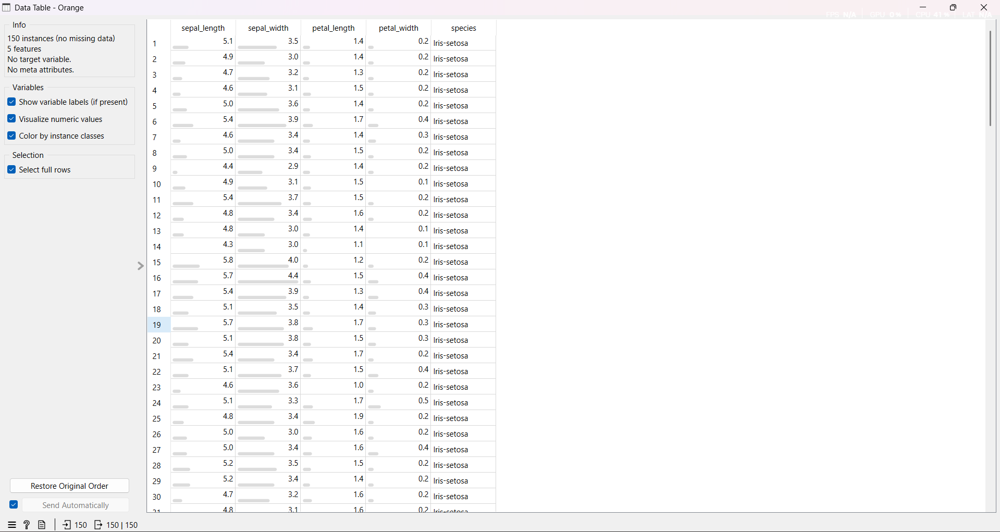
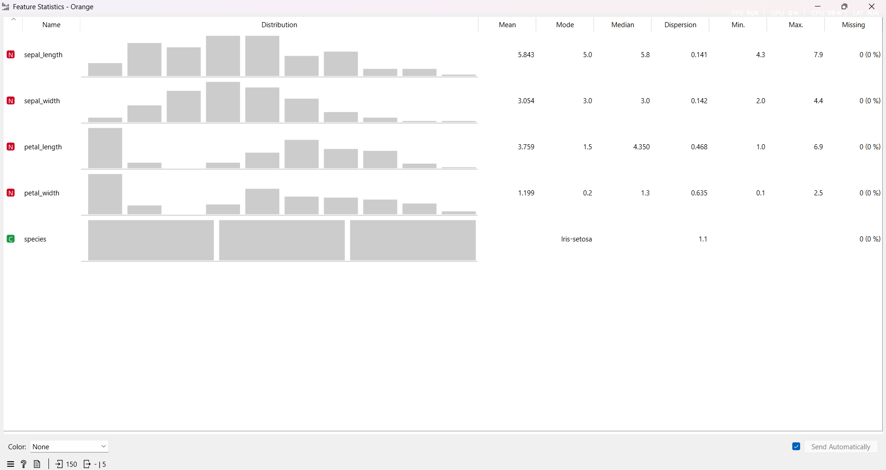
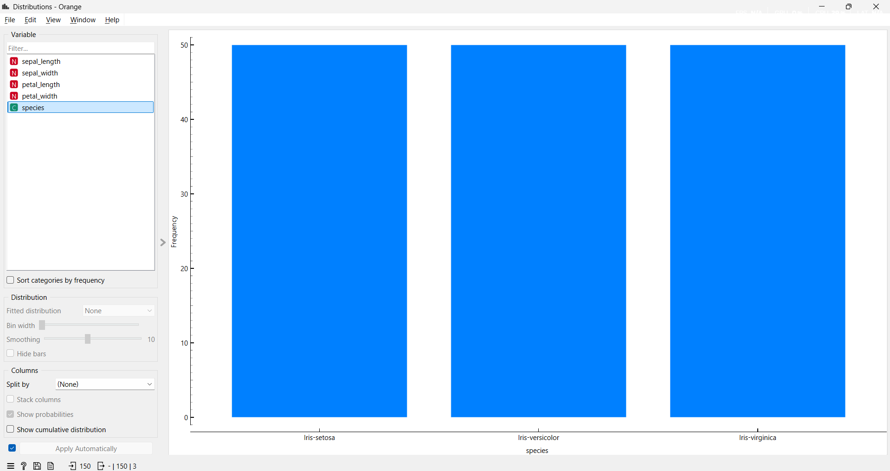
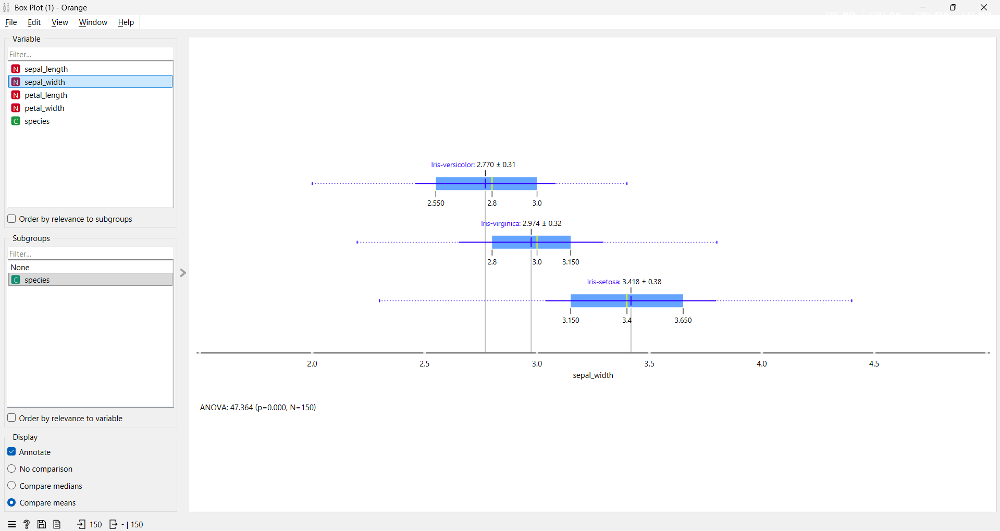
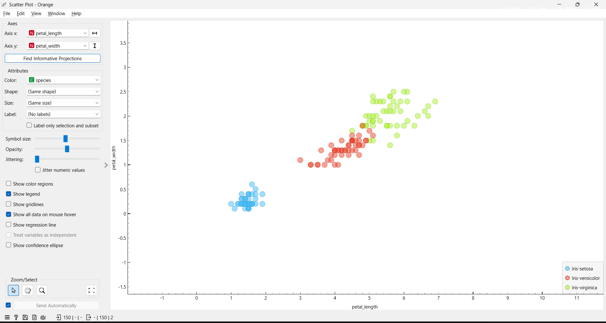
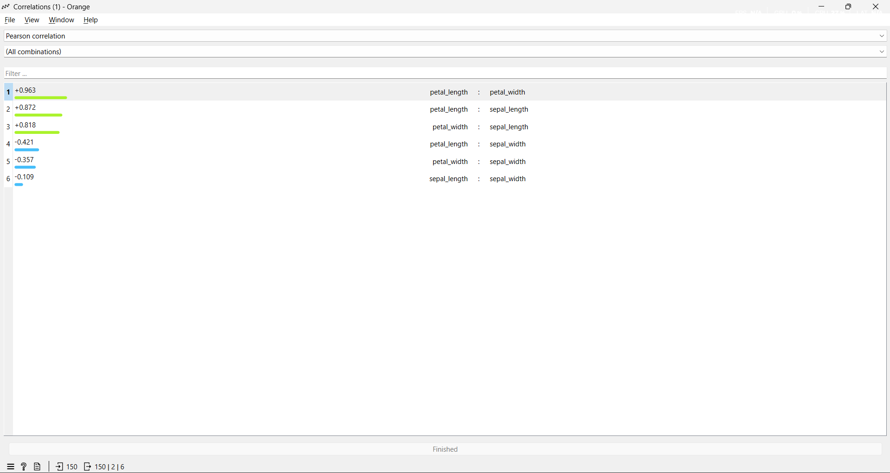
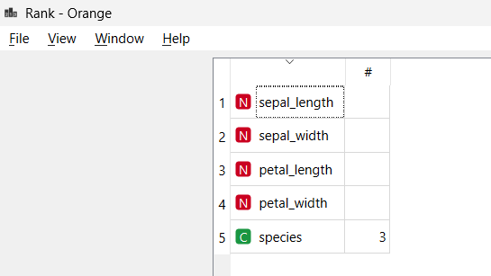

Pertemuan 2#
Analisis dan Visualisasi Data dengan Orange Data Mining#
Tahap Data Understanding dan visualisasi (Exploratory Data Analysis / EDA) dapat dilakukan secara intuitif menggunakan Orange Data Mining melalui antarmuka visual berbasis Widget.
Berikut adalah tahapan dan hasil eksplorasi dataset Iris menggunakan Orange:
1. Ringkasan dan Struktur Data (Data Info & Data Table)#
Langkah pertama adalah mengetahui dimensi dan struktur data yang akan diolah. Melalui widget Data Info, kita bisa melihat bahwa Dataset Iris terdiri dari 150 baris data, dengan 4 atribut fitur (numerik) dan 1 atribut target (kategorikal yaitu species). Pada tahap ini juga terkonfirmasi bahwa tidak ditemukan adanya missing value (data kosong). Detail isi datanya dapat dilihat langsung menggunakan widget Data Table.

Gambar: Ringkasan data mentah pada widget Data Info dan Data Table.2. Statistik Deskriptif (Feature Statistics)#
Untuk melihat ringkasan nilai statistik dari setiap atribut seperti rata-rata (Mean), Median, Min, Max, dan Standar Deviasi, kita menggunakan widget Feature Statistics. Widget ini merangkum seluruh informasi numerik tersebut secara langsung dalam satu tampilan visual tabel yang mudah dipahami.

Gambar: Ringkasan statistik deskriptif dari seluruh atribut dataset Iris.3. Distribusi Kelas Target (Distributions)#
Untuk melihat apakah dataset kita seimbang (balanced), kita perlu mengecek distribusi target species menggunakan widget Distributions. Hasilnya menunjukkan bahwa masing-masing spesies (Iris-setosa, Iris-versicolor, dan Iris-virginica) memiliki proporsi jumlah yang persis sama, yaitu masing-masing 50 data.

Gambar: Distribusi jumlah data per spesies (Value Counts).4. Deteksi Outlier (Box Plot)#
Visualisasi Box Plot digunakan untuk melihat sebaran nilai kuartil (Q1, Median, Q3) dan mendeteksi apakah terdapat pencilan data (outlier). Berdasarkan pemetaan atribut sepal_width terhadap setiap target spesies, terlihat adanya beberapa titik outlier pada spesies Iris-virginica.

Gambar: Deteksi outlier menggunakan Box Plot berdasarkan spesies.5. Hubungan Antar Variabel (Scatter Plot)#
Untuk menemukan pola korelasi dan persebaran data antar atribut, kita menggunakan visualisasi Scatter Plot yang memetakan dua variabel sekaligus. Dengan memplot petal_length pada sumbu X dan petal_width pada sumbu Y, terlihat sangat jelas bahwa spesies Iris-setosa membentuk klaster (kelompok) yang terpisah jauh dari dua spesies lainnya, sehingga sangat mudah untuk diklasifikasikan.

Gambar: Visualisasi korelasi antara panjang dan lebar mahkota (petal).6. Analisis Korelasi Antar Atribut (Correlations)#
Selain melihat korelasi secara visual melalui Scatter Plot, kita juga bisa mengukur kekuatan hubungan matematis antar variabel numerik menggunakan widget Correlations.
Nilai korelasi berkisar antara -1 hingga 1.
Pada dataset Iris, kita akan melihat bahwa
petal_lengthdanpetal_widthmemiliki korelasi positif yang sangat tinggi (mendekati angka 1), yang berarti jika kelopak memanjang, lebarnya juga cenderung bertambah.

Gambar: Tabel nilai korelasi Pearson antar atribut.7. Mengukur Tingkat Kepentingan Atribut (Rank)#
Dalam Data Mining, tidak semua fitur memiliki kegunaan yang sama. Beberapa fitur lebih penting daripada yang lain untuk membedakan target (spesies). Kita bisa menggunakan widget Rank untuk melihat atribut mana yang paling berpengaruh.
Metode seperti Information Gain atau Gain Ratio akan menilai setiap fitur.
Insight: Pada dataset Iris, atribut
petal_widthdanpetal_lengthakan menduduki peringkat teratas sebagai fitur yang paling membedakan spesies, sedangkan atributsepal_widthberada di peringkat terbawah.

Gambar: Peringkat atribut (Feature Scoring) berdasarkan kemampuannya membedakan spesies target.8. Persiapan Data Latih dan Data Uji (Data Sampler)#
Setelah kita memahami karakteristik data secara mendalam, langkah terakhir sebelum masuk ke tahap Modeling (pembuatan model AI) adalah membagi dataset. Menggunakan widget Data Sampler, kita membagi data asli menjadi dua bagian:
Data Latih (Training Data): Biasanya sebesar 70-80%, digunakan untuk melatih algoritma.
Data Uji (Testing Data): Sisa 20-30%, digunakan untuk menguji seberapa pintar model yang telah dilatih.
 Gambar: Pengaturan persentase pembagian data latih dan data uji pada Data Sampler.
Gambar: Pengaturan persentase pembagian data latih dan data uji pada Data Sampler.
Jenis Atribut#
Nominal#
Tidak memiliki urutan.
Contoh: species
Ordinal#
Memiliki urutan tetapi tidak mengukur jarak.
Contoh: rating
Biner#
Memiliki dua nilai.
Contoh: ya/tidak
Numerik#
Berbentuk angka, terdiri dari:
Interval
Rasio